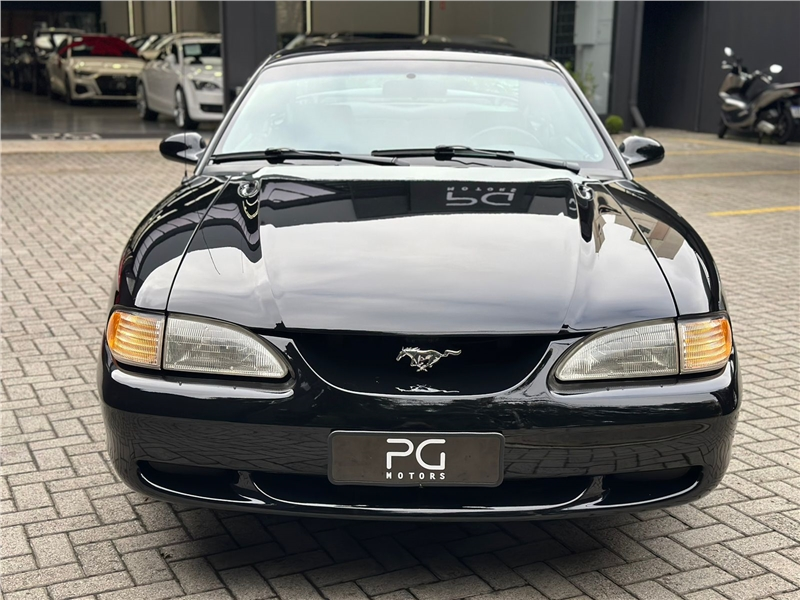
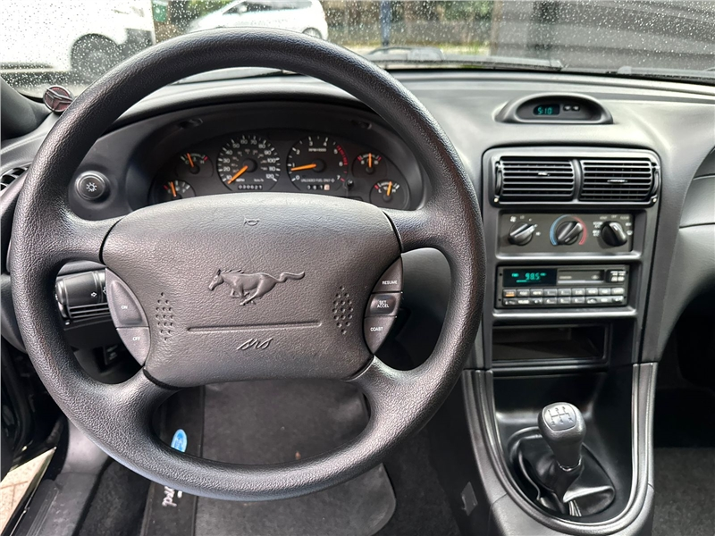
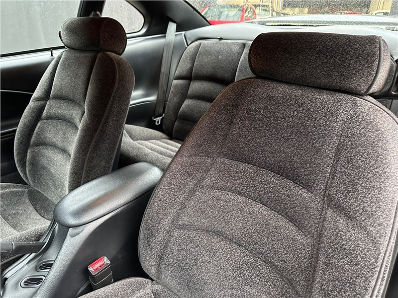
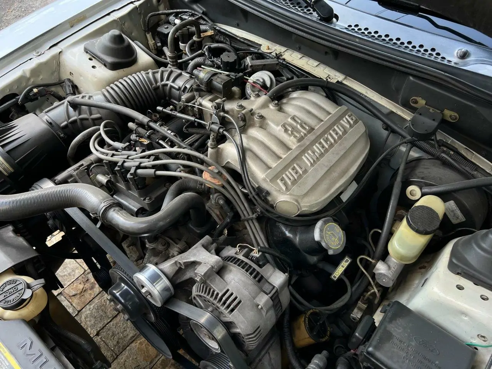
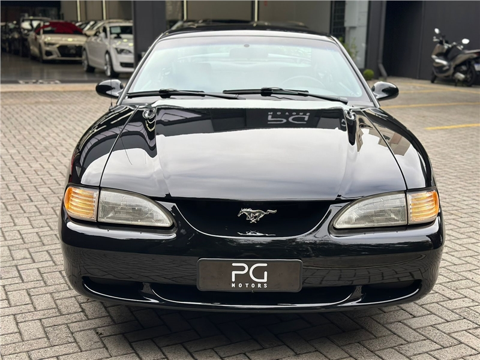
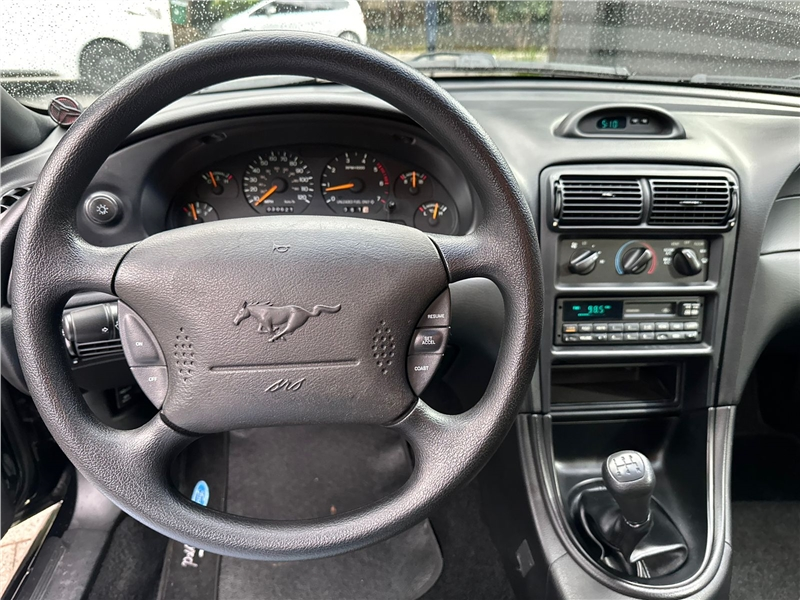
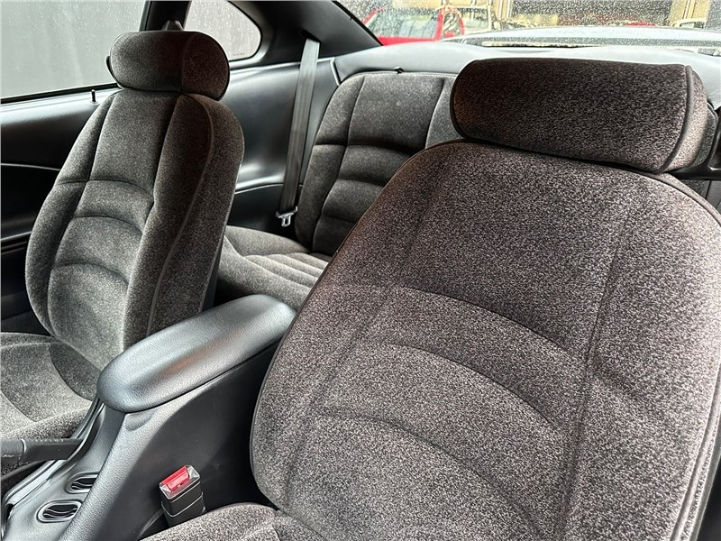
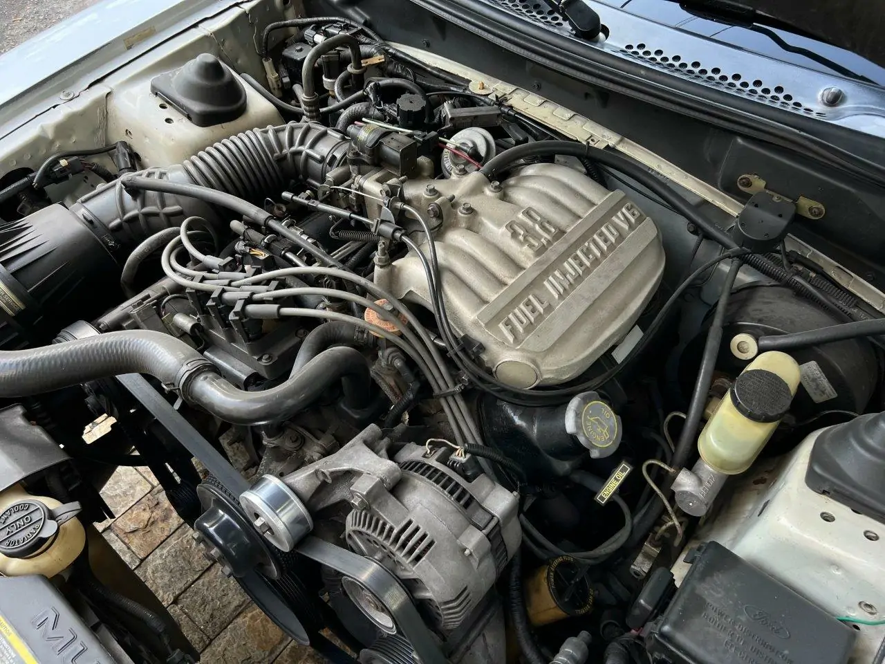

Mustang 1995
O Mustang V6 1995, um ícone dos anos 90, encapsula a transição entre o estilo robusto e tradicional dos anos anteriores e a busca por inovação e eficiência dos tempos modernos. Sob o capô, ele ostenta um motor V6 de 3.8 litros que, apesar de não ser tão potente quanto as versões V8, oferece uma combinação equilibrada de desempenho e economia de combustível, atingindo cerca de 145 cavalos de potência e 218 Nm de torque. Esse modelo específico marca a terceira geração da plataforma Fox, também conhecida como "SN95", introduzida para manter o Mustang competitivo em um mercado cada vez mais exigente. O design exterior reflete uma estética mais aerodinâmica e fluida, diferenciando-se significativamente das linhas retas e musculosas dos seus antecessores dos anos 80. As lanternas traseiras triplas horizontais e a frente rebaixada com a grade em formato oval são características distintivas que se tornaram icônicas. Dentro, o Mustang V6 1995 combina um toque de luxo com a funcionalidade, apresentando um painel de instrumentos redesenhado que facilita a leitura, assentos confortáveis revestidos em tecido ou couro e a opção de um sistema de som premium Mach 460, que era um grande atrativo na época. A transmissão podia ser manual de 5 marchas ou automática de 4 marchas, oferecendo aos motoristas a flexibilidade de escolha de acordo com suas preferências de direção. Em termos de suspensão, o Mustang V6 manteve a configuração tradicional de eixo rígido na traseira, que era mais simples e robusta, embora a condução não fosse tão refinada quanto os sistemas de suspensão independente dos concorrentes mais caros. No entanto, a dirigibilidade era respeitável, com uma boa resposta nas curvas e uma sensação de solidez na estrada, o que o tornava uma opção viável tanto para uso diário quanto para entusiastas em busca de um pouco de emoção ao volante. Este modelo também se destacou por ser mais acessível em comparação com as versões de oito cilindros, permitindo que um público mais amplo experimentasse a sensação de dirigir um Mustang. O legado do Mustang V6 1995 é evidenciado por sua popularidade contínua entre os colecionadores e entusiastas de carros clássicos, que valorizam seu papel na história da evolução dos muscle cars americanos. Apesar das críticas de puristas que preferem a potência bruta dos motores V8, o V6 de 1995 é um testemunho de como a Ford conseguiu equilibrar tradição e inovação, oferecendo um veículo que não só ressoava com os valores clássicos do Mustang, mas também se adaptava às necessidades e expectativas de uma nova geração de motoristas. Em retrospecto, o Mustang V6 1995 pode ser visto como um ponto de inflexão, onde a durabilidade e a estética do passado se fundiram com as novas demandas de eficiência e acessibilidade, pavimentando o caminho para as iterações futuras deste carro emblemático.

 







Para adquirir o veiculo, nos contate no whatsapp (11) 9 5681-9861